Inverse Distance Weighting¶
Module focused on the Inverse Distance Weighting interpolation technique. The IDW algorithm is an average moving interpolation that is usually applied to highly variable data. The main idea of this interpolation strategy lies in fact that it is not desirable to honour local high/low values but rather to look at a moving average of nearby data points and estimate the local trends. The node value is calculated by averaging the weighted sum of all the points. Data points that lie progressively farther from the node inuence much less the computed value than those lying closer to the node.
| Theoretical Insight: | |
|---|---|
This implementation is based on the simplest form of inverse distance weighting interpolation, proposed by D. Shepard, A two-dimensional interpolation function for irregularly-spaced data, Proceedings of the 23 rd ACM National Conference. The interpolation value 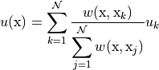 where, in general, 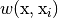 represents the weighting function: 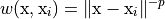 being 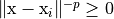 is the
Euclidean distance between and data point
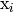 and |
|
 of a given point 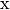
from a set of samples 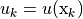, with
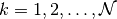, is given by:
of a given point 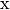
from a set of samples 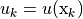, with
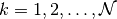, is given by: is a power parameter, typically equal to
2.
is a power parameter, typically equal to
2.IDW.perform |
This method performs the deformation of the mesh points. |
-
class
IDW(idw_parameters, original_mesh_points)[source] Bases:
objectClass that handles the IDW technique.
Parameters: - idw_parameters (
IDWParameters) – the parameters of the IDW - original_mesh_points (numpy.ndarray) – coordinates of the original points of the mesh.
Variables: - parameters (
IDWParameters) – the parameters of the IDW. - original_mesh_points (numpy.ndarray) – coordinates of the original points of the mesh.
- modified_mesh_points (numpy.ndarray) – coordinates of the deformed points of the mesh.
Example: >>> from pygem.idw import IDW >>> from pygem.params_idw import IDWParameters >>> import numpy as np >>> params = IDWParameters() >>> params.read_parameters('tests/test_datasets/parameters_idw_cube.prm') >>> nx, ny, nz = (20, 20, 20) >>> mesh = np.zeros((nx * ny * nz, 3)) >>> xv = np.linspace(0, 1, nx) >>> yv = np.linspace(0, 1, ny) >>> zv = np.linspace(0, 1, nz) >>> z, y, x = np.meshgrid(zv, yv, xv) >>> mesh = np.array([x.ravel(), y.ravel(), z.ravel()]) >>> original_mesh_points = mesh.T >>> idw = IDW(rbf_parameters, original_mesh_points) >>> idw.perform() >>> new_mesh_points = idw.modified_mesh_points
-
perform()[source] This method performs the deformation of the mesh points. After the execution it sets self.modified_mesh_points.
- idw_parameters (